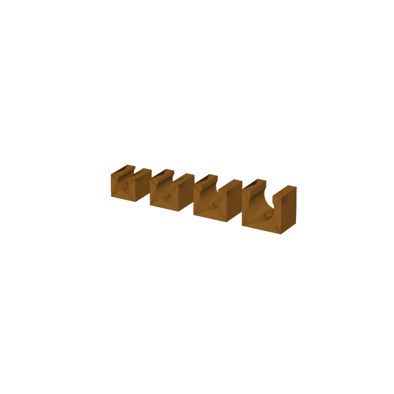

Cable clip set STL, 4 screw-down sizes
Four screw-down cable clips on one plate, sized for 4, 5.5, 7 and 9 mm cables. Each clip is a base plate with a 3.4 mm screw hole, an arch channel on top, and an opening under the arch cut 0.6 mm narrower than the cable. The cable presses in and holds; you can pull it out by hand. Screw one down at the edge of a desk, behind a monitor, or inside a cabinet.
This page carries the measured spec sheet: dimensions taken from the mesh, volume, print time estimate, and preview renders, so you can check the fit against your cables before you slice.

Spec sheet, measured from the mesh
| Spec | Value |
|---|---|
| Cable sizes | 4, 5.5, 7 and 9 mm |
| Opening under the arch | 3.4 to 8.4 mm (cable diameter minus 0.6 mm) |
| Base plates | 10 to 15 mm wide, 11 mm deep |
| Screw hole | 3.4 mm, through the middle of the base |
| Plate footprint | 67.5 × 11 × 13.3 mm (full set layout) |
| Volume | 3.8 cm³, about 4.0 g of PLA |
| Print time | About 0.4 h (25 min) for the set, PLA, 0.4 nozzle, 0.2 mm layers |
| Orientation | Opening-side-up, flat on the plate, no supports |
| Mesh check | Watertight, winding consistent, 4 bodies, 1,776 faces (trimesh 5.1.0, 2026-09-10) |
| Files | STL and 3MF plus a parametric generator script |
| License | Royalty free, no AI training |
Which cable goes in which clip
The small clip takes a USB cable. The 5.5 mm clip fits a 6 mm lamp cord. The 7 mm clip holds an 8 mm HDMI or braided cable, and the largest takes thicker power leads. The opening is stiff on purpose: a cable does not fall out on its own, but it snaps in and out by hand.
If the snap comes out too tight on your printer, raise the open_under parameter from 0.6 to 0.8 in the generator (gen_cableclips13.py). Every dimension is a parameter there: base thickness, depth, wall, channel oversize, opening, screw hole.
Print notes
The set prints opening-side-up on the plate with no supports. The only bridge is the channel arch over the slot. At standard PLA settings the whole plate runs about 25 minutes.
I have not test-printed this set yet. The geometry is mesh-checked: watertight per clip and per row, winding consistent. Treat the opening as the knob to tune first, since it is what decides how the cable seats.
Where to get the files
An adhesive-mount sibling that clips 4, 6 and 8 mm cables is live and free on MakerWorld: same C-channel shape, sticky base instead of a screw hole, parametric for any cable size. This screw-down 4-size set is staged for a CGTrader listing and goes public when the store account activates.
More printed organizers, with a status table for the whole pool: 3D printed desk organizers and printable tools.
Compare all 20 models by solid mesh volume in the STL volume ledger.
FAQ
What cables fit the clips?
Round cables from 4 to 9 mm: USB cords, lamp cords, HDMI and braided cables, and thicker power leads, one clip size per range. The opening under the arch runs 3.4 to 8.4 mm.
Does the set print without supports?
Yes. Everything sits flat on the plate with the openings facing up. The channel arch over each slot is the only bridge.
How long does the plate take to print?
About 25 minutes in PLA on a 0.4 mm nozzle at 0.2 mm layers, roughly 4 g of filament for the whole set of four.